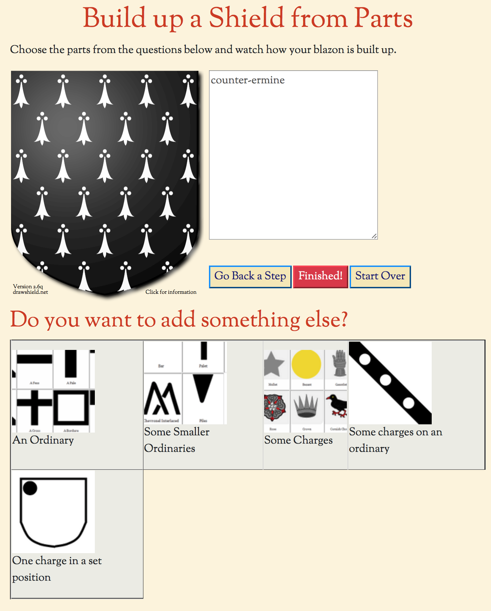

This page lets you construct a shield using a small subset of the DrawShield features. It can be helpful to understand how blazons are constructed as you can see how each part that you chose adds to the final blazon.
The illustration here shows a partially constructed shield - the field (counter-ermine) has been chosen and the program is waiting for the user to add something else to the shield.
To choose an option just click on the appropriate box in the bottom section. The caption at the head of this section will tell what decision you need to make. If you change you mind about something, just click on the "Undo Step" button. This will undo the most recent complete step. You can keep clicking this back for as many times as required, back to the blank shield.
You must answer all of the current set of questions before you can "finish" your design. For example, if you chose a treatment as the field you will have to chose the treatment type, AND two colours for that treatment before you can use the "Finished!" button.
When you have your shield looking how you want it the final blazon is shown for you in the textbox on the top left. You can cut and paste this elsewhere as required. Alternatively, to add more things to your design, click on the "Finished!" button. This will give you a link to the "Create" page, including your blazon. From there you will be able to add to or modify your blazon with the many hundreds of extra items available from the full DrawShield suite.
If you want to start all over again to create a new shield, just click the "Refersh" button.